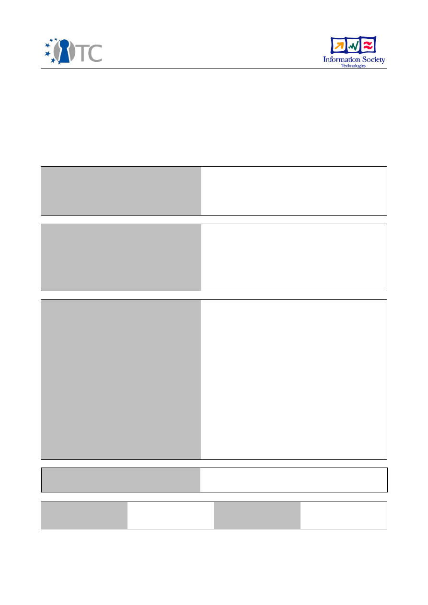

D05.3 Selected Portions of the Source Code
Used to Build D05.2
Project number
IST-027635
Project acronym
Open_TC
Project title
Open Trusted Computing
Deliverable type
Report (see p 84/85 Annex 1 - Nature)
Deliverable reference number
IST-027635/D05.3/Final
Deliverable title
Selected Portions of the Source Code Used to
Build D05.2
WP contributing to the deliverable
WP05
Due date
Oct 2007 - M24
Actual submission date
November 26, 2007
Responsible Organisation
IAIK, RUB, HP
Authors
IBM (Matthias Schunter), KUL (Dries
Schellekens)
Abstract
This CD contains source code of core
component of the OpenTC 2007
demonstrator for “Corporate Computing at
Home”. It is based on the research
documented in Deliverable D05.1 ”Basic
Security Services” and is accompanied by
design documentation in Deliverable D05.3.
Keywords
Security management, isolation policy, policy
enforcement, corporate computing at home,
2007 demonstrator, implementation, code
Dissemination level
Public
Revision
Final
Instrument
IP
Start date of the
project
1
st
November 2005
Thematic Priority
IST
Duration
42 months

A
BSTRACT
This CD contains source code of core component of the OpenTC 2007 demonstrator
for “Corporate Computing at Home”. It is based on the research documented in Deliv-
erable D05.1 ”Basic Security Services” and is accompanied by design documentation
in Deliverable D05.3.
The goal of these deliverable is to describe and explain the actual design and imple-
mentation of our demonstrator. In particular how we addressed the security challenges
identified in the given scenario.
2
1
Introduction
This deliverable documents the current source code of the Workpackage 5 portions of
the 2007 demonstrator. It includes the security services for Xen and L4, the networking
for Xen, and the common public key infrastructure.
2
Xen Security Services/
: Xen Security Services
(IBM)
This directory contains the source code of the security services for Xen. This includes
integrity, network, and compartment management. This code is OpenTC Confidential.
3
vNET/
: Xen Virtual Networking (HPL)
This directory contains the source code of the virtual networking for Xen. This includes
the virtual switch code and virtual network management tools. This code is OpenTC
Confidential.
4
L4 Security Services
: Security Services for L4
(RUB)
The L4 Security Services directory contains the full source code of the L4 Security
Services including:
•
Compartment Manager
•
Integrity Manager
•
Property Manager
•
MicroGUI
•
Storage Manager
•
TPM Manager
•
User Manager
•
Trust Manager
•
other specific tools
Additionally this directory contains an archive holding the documentation of the
whole Security Services API in html format.
3
5
PKI/
: Public-Key Infrastructure (IAIK)
The “PKI” directory contains a set of PKI components with Trusted Computing support
which were developed within OpenTC.
pca-0.1.tar.bz2 Is a proof-of-concept implementation of a “Privacy CA” server ser-
vice. This PKI service interprets TPM Endorsement Key certificates of hard-
ware TPMs and issues Attested Identity Key (AIK) certificates, plus common
management functions.
jTpmTools 0.3a.tar.bz2 Is a command line client application which showcases inter-
action with the local TPM to extract the EK certificate and does the AIK creation
cycle with a remote entity, the above mentioned Privacy CA.
tccert-0.2.2.tar.bz2 Is a library which provides the implementation of Trusted Com-
puting specific certificate handling.
Note that these packages are not standalone, but require additional support libraries.
For these and up to date versions please visit
http://trustedjava.sourceforge.net/
.
4